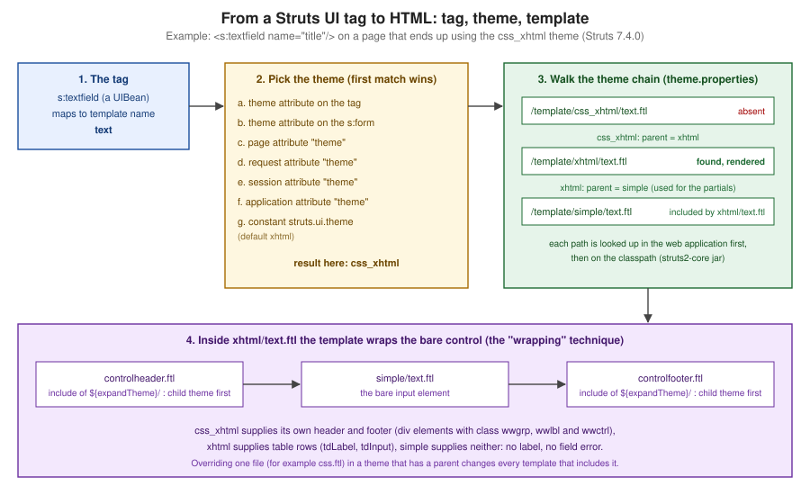

Themes & Templates
|
This content was generated with the assistance of AI and should be verified against the official documentation before being relied on in production. |
This page is written against Apache Struts 7.4.0 (released 2026-10-02) running on Apache Tomcat 11.0.26 and Java 21,
the combination that every example was built, deployed and requested on; the facts were checked on 2026-10-08 against
the Tag Developer Guide pages on https://struts.apache.org/tag-developers/, the Getting Started "Themes" tutorial, the
default.properties and the template/ directories inside the 7.4.0 struts2-core jar, and the source of
FreemarkerThemeTemplateLoader. The HTML that the Struts UI tags (s:textfield, s:select, s:form and the rest)
write is not produced by Java code: each tag hands its attributes to a FreeMarker template, and a theme is a
directory of such templates that gives every tag a consistent look and behaviour. Knowing the mechanism pays off the
first time a form needs another layout, a label disappears, or a field error is missing. The running scenario is the
Bookshelf, a catalogue of books exposed as Struts actions; this page renders one Bookshelf form in each of the four
built-in themes, shows the order in which Struts picks a theme, overrides a single template, and builds two small custom
themes. The tags themselves (the generic and UI tag families, s:form, s:head and the attributes of each control) are covered by
Tags Overview & Generic Tags and UI & Form Tags,
the FreeMarker and Velocity result types by FreeMarker & Velocity Views, and Tiles by
Tiles & Page Layouts.
Tags, Templates and Themes
The Tag Developer Guide defines three words, and the rest of the page depends on them:
| Term | Meaning |
|---|---|
tag |
A small piece of code executed from a JSP, FreeMarker or Velocity page, such as |
template |
A bit of code, usually FreeMarker, rendered by certain (the HTML) tags; one file such as |
theme |
A collection of templates packaged together to provide common functionality; one directory such as |
The path of one tag from the page to the browser has five steps, shown in the figure below. The tag is a UIBean; it
evaluates its attributes against the value stack, decides which theme applies, maps its own name to a template name
(s:textfield to text, s:select to select, s:submit to submit), asks the template engine for
/template/<theme>/<name>.ftl, and runs the template with all attributes available as the FreeMarker hash attributes.
The Core Developer Guide’s statement that FreeMarker is the default engine regardless of the page format is the reason
the same templates serve JSP, FreeMarker and Velocity pages: the JSP, FTL and Velocity tags are all rendered with
FreeMarker internally.

Two consequences follow from the figure and are worth stating early. First, the theme decides what surrounds a control:
the same s:textfield writes a table row in xhtml, a group of div elements in css_xhtml and a bare input in
simple and html5. Second, because the markup lives in templates and not in Java, changing it never needs a
recompilation: a template can be overridden by dropping a file into the web application, which is the subject of a
later section.
The Bookshelf Used on This Page
All examples are classes, mappings and templates of one WAR, g10themes.war, deployed under the context path
/g10themes on Tomcat 11.0.26 (a Maven project that imports the struts2-bom 7.4.0, with jakarta.servlet-api 6.1.0
and jakarta.servlet.jsp-api 4.0.0 as provided dependencies; the page Struts Getting Started explains the
project layout and web.xml). One action class, ThemesAction, holds the form state; the JSPs take the theme from the
request, so one action can show every theme:
package org.example.bookshelf;
import java.util.List;
import java.util.Map;
import org.apache.struts2.ActionSupport;
import org.apache.struts2.action.SessionAware;
import org.apache.struts2.interceptor.parameter.StrutsParameter;
public class ThemesAction extends ActionSupport implements SessionAware {
private String title;
private String genre = "fiction";
private boolean available = true;
private String themeName = "xhtml";
private String sessionTheme;
private Map<String, Object> session;
public String getTitle() { return title; }
@StrutsParameter public void setTitle(String v) { title = v; }
public String getGenre() { return genre; }
@StrutsParameter public void setGenre(String v) { genre = v; }
public boolean isAvailable() { return available; }
@StrutsParameter public void setAvailable(boolean v) { available = v; }
public String getThemeName() { return themeName; }
@StrutsParameter public void setThemeName(String v) { themeName = v; }
public String getSessionTheme() { return sessionTheme; }
@StrutsParameter public void setSessionTheme(String v) { sessionTheme = v; }
public List<String> getGenres() { return List.of("fiction", "science", "history"); }
@Override public void withSession(Map<String, Object> s) { session = s; }
@Override public void validate() {
if (title != null && title.isBlank()) {
addFieldError("title", "Title is required");
}
}
public String execute() { return INPUT; }
public String useSessionTheme() {
if (sessionTheme != null) session.put("theme", sessionTheme);
return SUCCESS;
}
}Source: Struts Javadoc — SessionAware
Two details of 7.x show in the class. SessionAware lives in org.apache.struts2.action and its method is
withSession, and every setter that request parameters may reach carries
@StrutsParameter. The mapping sends form and save to one JSP, and the wildcard action *Page sends <name>Page
to /WEB-INF/views/<name>.jsp, so every experiment below is one small JSP:
<struts>
<constant name="struts.allowlist.packageNames" value="org.example.bookshelf"/>
<package name="default" extends="struts-default" namespace="/">
<action name="form" class="org.example.bookshelf.ThemesAction">
<result name="input">/WEB-INF/views/form.jsp</result>
<result>/WEB-INF/views/form.jsp</result>
</action>
<action name="save" class="org.example.bookshelf.ThemesAction">
<result name="input">/WEB-INF/views/form.jsp</result>
<result>/WEB-INF/views/form.jsp</result>
</action>
<action name="setTheme" class="org.example.bookshelf.ThemesAction" method="useSessionTheme">
<result type="redirectAction">selectPage</result>
</action>
<action name="*Page" class="org.example.bookshelf.ThemesAction">
<result>/WEB-INF/views/{1}.jsp</result>
<result name="input">/WEB-INF/views/{1}.jsp</result>
</action>
</package>
</struts>The form that is rendered in every theme is the same four controls, with the theme supplied as an OGNL expression so the request can choose it:
<%@ taglib prefix="s" uri="/struts-tags" %>
<!DOCTYPE html>
<html><head><s:head theme="%{themeName}"/></head><body>
<s:form action="save" theme="%{themeName}">
<s:textfield name="title" label="Title" required="true"/>
<s:select name="genre" label="Genre" list="genres"/>
<s:checkbox name="available" label="Available"/>
<s:submit value="Save"/>
</s:form>
</body></html>The Four Built-in Themes
Struts 7.4.0 ships four theme directories under template/ in struts2-core, and their relations are declared in a
one-line theme.properties file in each directory. Listing the jar (unzip -l struts2-core-7.4.0.jar) gives the real
sizes:
| Theme | Parent (theme.properties) |
Files in the jar | What it adds |
|---|---|---|---|
|
none |
44 |
Bare HTML elements: no label, no table, no error message. The foundation of the others |
|
|
33 |
A two-column table layout, labels on the left or the top, validation messages, the required-field star, tooltips |
|
|
16 |
The xhtml theme reimplemented with |
|
|
44 |
A copy of the simple templates with HTML5 output (no empty |
Only four directories exist. The Tag Developer Guide and the Getting Started tutorial still mention an ajax theme;
there is none in 7.4.0 (see "Where the Books Are Outdated" and "Inconsistencies in the Official Documentation").
A theme need not provide every template. css_xhtml has no text.ftl, select.ftl or form.ftl of its own: they are
found by following parent = xhtml, and the xhtml ones in turn include the simple templates for the bare control. The
same form, requested as form?themeName=<theme>, shows the difference. In the xhtml theme (the default), every control
becomes a table row, the label is generated from the label attribute, and the checkbox gets its own cell layout:
<link rel="stylesheet" type="text/css" href="/g10themes/static/xhtml/styles.css"/>
<form id="save" name="save" action="/g10themes/save.action" method="post">
<table class="wwFormTable">
<tr>
<td class="tdLabel"><label for="save_title" class="label">Title:</label></td>
<td class="tdInput"><input type="text" name="title" value="" id="save_title" required="true"/></td>
</tr>
<tr>
<td class="tdLabel"><label for="save_genre" class="label">Genre:</label></td>
<td class="tdInput"><select name="genre" id="save_genre">
<option value="fiction" selected="selected">fiction</option>
<option value="science">science</option>
<option value="history">history</option>
</select>
</td>
</tr>
<tr>
<td class="tdCheckboxLabel">
</td>
<td class="tdCheckboxInput">
<input type="checkbox" name="available" value="true" checked="checked" id="save_available"/><label for="save_available" class="checkboxLabel">Available</label></td>
</tr>
<tr>
<td colspan="2"><div class="formButton"><input type="submit" value="Save" id="save_0"/>
</div></td>
</tr>
</table></form>The css_xhtml theme writes the same information with div elements that carry wwgrp, wwlbl and wwctrl classes
and ids derived from the control id, so the layout is entirely a matter of CSS:
<link rel="stylesheet" type="text/css" href="/g10themes/static/css_xhtml/styles.css"/>
<form id="save" name="save" action="/g10themes/save.action" method="post">
<div id="wwgrp_save_title" class="wwgrp">
<div id="wwlbl_save_title" class="wwlbl">
<label for="save_title" class="label"> Title:
</label></div> <br /><div id="wwctrl_save_title" class="wwctrl">
<input type="text" name="title" value="" id="save_title" required="true"/></div></div>
<div id="wwgrp_save_available" class="wwgrp">
<div id="wwctrl_save_available" class="wwctrl">
<input type="checkbox" name="available" value="true" checked="checked" id="save_available"/></div> <div id="wwlbl_save_available" class="wwlbl">
<label for="save_available" class="checkboxLabel">Available</label></div> </div>
<div class="formButton" id="wwctrl_save_0"><input type="submit" value="Save" id="save_0"/>
</div>
</form>The simple theme produces only the controls. Notice what is missing: the label attribute of the tags produced no
label at all, and the form has no table or division:
<form id="save" name="save" action="/g10themes/save.action" method="post">
<input type="text" name="title" value="" id="save_title" required="true"/>
<select name="genre" id="save_genre">
<option value="fiction" selected="selected">fiction</option>
<option value="science">science</option>
<option value="history">history</option>
</select>
<input type="checkbox" name="available" value="true" checked="checked" id="save_available"/>
<input type="submit" value="Save" id="save_0"/>
</form>The html5 theme extends simple and was observed to behave like it, with compact HTML5 output (no label, and a
submit written as <input type="submit" ...> without the trailing slash):
<form id="save" name="save" action="/g10themes/save.action" method="post">
<input type="text" name="title" value="" id="save_title" required="true"/>
<select name="genre" id="save_genre"><option value="fiction" selected="selected">fiction</option>...</select>
<input type="checkbox" name="available" value="true" checked="checked" id="save_available"/>
<input type="submit" value="Save" id="save_0">
</form>Two points of the four outputs deserve a sentence each. The simple and html5 themes do not render the label
attribute nor field errors; in those themes the labels and the messages are the page’s job (s:label, plain label
elements, s:fielderror). And in all four outputs the required="true" of the first control appears as an HTML
attribute on the input, not as the star next to the label: required is not a Struts attribute, it is passed through as
a dynamic attribute (see the section on common attributes).
What Each Theme Is For
-
simpleis the starting point for custom themes and for pages that have a design of their own. It is also the theme that thejavatemplatesplugin can render with Java code instead of FreeMarker, which the Performance Tuning page recommends when no FreeMarker template is overridden. -
xhtmlis the default and the right choice for quick forms, admin pages and prototypes: labels, error rows and the required star come for free. Its stylesheetstyles.cssdefines the classes the templates use (tdLabel,label,errorLabel,errorMessage,required). -
css_xhtmlsuits a page that styles forms with its own CSS but still wants the label, error and grouping markup; the label position is a CSS decision (labelPositiononly chooses between a blockdivand an inlinespanfor the control). -
html5suits new pages: HTML5 constraint attributes can be derived from the validators withstruts.ui.html5.constraints(see Validation), and the client-side JavaScript validation ofxhtmlandcss_xhtmlis deprecated in 7.4.0 in favour of it.
Selecting the Theme
Struts picks the theme for a tag with the first of seven rules that matches:
-
the
themeattribute of the tag itself; -
the
themeattribute of the surroundings:form; -
an attribute named
themein page scope; -
an attribute named
themein request scope; -
an attribute named
themein session scope; -
an attribute named
themein application scope; -
the
struts.ui.themeconstant (defaultxhtml).
The order was verified with a JSP that sets scope attributes from request parameters and renders one s:textfield
inside an s:form:
<%@ taglib prefix="s" uri="/struts-tags" %>
<%
String p = request.getParameter("p"), r = request.getParameter("r"),
se = request.getParameter("s"), a = request.getParameter("a");
if (p != null) pageContext.setAttribute("theme", p);
if (r != null) request.setAttribute("theme", r);
if (se != null) session.setAttribute("theme", se);
if (a != null) application.setAttribute("theme", a);
%>
<s:form action="save" theme="%{#parameters.f[0]}">
<s:textfield name="title" label="Title" theme="%{#parameters.t[0]}"/>
</s:form>An empty theme expression falls through to the next rule, which is why the form and tag levels can be driven from
the query string here. The results, identified by the markup that came back (table, wwgrp division, or a bare input),
were:
| Request parameters (page, request, session, application, form, tag) | Theme that rendered | Rule that won |
|---|---|---|
none |
xhtml |
the constant |
page |
simple |
page scope |
request |
css_xhtml |
request scope |
session |
simple |
session scope |
page |
simple |
page beats request |
request |
css_xhtml |
request beats session |
session |
simple |
session beats application |
page |
css_xhtml |
form beats page |
page |
xhtml |
tag beats form |
The table also exposes the trap of the last two levels. An attribute stored in application scope stays there until the
application stops: after the experiment that set application to css_xhtml, a request with no parameters at all
rendered css_xhtml too, and only a redeploy restored the default. A session attribute lasts as long as the session.
The session level is the standard way to give each user a theme of their own. The Bookshelf’s setTheme action stores
the name in the session map and redirects; the next request of the same session rendered css_xhtml while a request
without that session cookie still rendered xhtml:
$ curl -s -c cj -b cj http://localhost:18080/g10themes/selectPage | grep -o 'tdLabel\|wwgrp' | head -1
tdLabel
$ curl -s -c cj -b cj -L "http://localhost:18080/g10themes/setTheme?sessionTheme=css_xhtml" -o /dev/null
$ curl -s -c cj -b cj http://localhost:18080/g10themes/selectPage | grep -o 'tdLabel\|wwgrp' | head -1
wwgrp
$ curl -s http://localhost:18080/g10themes/selectPage | grep -o 'tdLabel\|wwgrp' | head -1
tdLabelThe scriptlet above is only the shortest way to set the scope attributes. Remember that
every theme value is a string expression: write theme="css_xhtml" for a literal and theme="%{themeName}" for a
property, and a name that matches no directory fails (see the pitfalls).
The Constants That Control Themes
The behaviour above is configured by constants that belong in struts.xml (or struts.properties), documented in
default.properties of the jar:
| Constant | Default in 7.4.0 | Effect |
|---|---|---|
|
|
The theme used when no other rule selects one |
|
|
The directory searched for templates (the first path segment of |
|
|
The marker that tells the loader to search a theme and its parents; rarely changed |
|
|
The template engine: |
|
|
The path, under the context, where |
|
|
Whether the html5 theme derives |
|
|
Struts-side caching of FreeMarker templates |
|
500 ms (FreeMarker default, per Performance Tuning) |
How often FreeMarker checks whether a template changed |
|
|
Strips indentation and blank lines when a template is compiled (off in dev mode) |
Three of the constants were exercised in one deployment. A Bookshelf struts.xml with the following constants made the
page without any theme attribute render the custom shelf theme (built below), moved the stylesheet link of s:head,
and changed the token that the loader prints in its error messages:
<constant name="struts.ui.theme" value="shelf"/>
<constant name="struts.ui.staticContentPath" value="/assets"/>
<constant name="struts.ui.theme.expansion.token" value="@@@"/>The s:head of a page with the xhtml theme then wrote
<link rel="stylesheet" type="text/css" href="/g10themes/assets/xhtml/styles.css"/> and
<script src="/g10themes/assets/utils.js">, and a theme with no parent failed with the path
/template/@@@orphan/css.ftl. The struts.ui.templateDir constant was exercised with a copy of the simple and xhtml
trees under a tpl2 directory of the web application: a label template with a marker in tpl2/xhtml/label.ftl took
effect, while a request for css_xhtml failed because that theme had not been copied (Template not found for name
"/tpl2/css_xhtml/head.ftl"). Changing the directory therefore moves every theme, the built-in ones included.
s:head and the Static Content
Themes bring CSS and JavaScript with them, and s:head is the tag that emits the links. In the xhtml theme head.ftl writes
a stylesheet link and then includes the simple head template, which loads utils.js; the css_xhtml theme does the same
with its own stylesheet; the html5 theme loads only utils.js. With the Bookshelf’s form.jsp above the head of the
page for each theme was:
<link rel="stylesheet" type="text/css" href="/g10themes/static/xhtml/styles.css"/>
<script src="/g10themes/static/utils.js">
</script>The css_xhtml head replaces xhtml with css_xhtml in the stylesheet path, and the simple and html5 heads contain only
the script line. The files are served by the framework from the jar (/static/xhtml/styles.css answered HTTP 200), so
there is nothing to copy to the web application unless the stylesheet is to be customised. The s:head tag resolves its
theme exactly like any other tag, which gives one more trap: a page with <s:head/> and a form that sets
theme="css_xhtml" only on the form still linked /static/xhtml/styles.css, because the form attribute is not visible
to a tag outside the form. Put the theme where both tags see it (a scope attribute, the constant), or give s:head the
same theme attribute, as the Bookshelf’s form.jsp does.
The Getting Started tutorial shows the default styles that the xhtml theme defines and how a page overrides them by
repeating the selectors in its own style element:
<style type="text/css">
.label {color:blue; font-style:normal; font-weight:bold}
</style>Common Attributes the Templates Interpret
The templates read the attributes of the tag through the hash attributes, so the attributes that a tag accepts are the
ones the templates look at. The ones that matter for appearance are the same on every UI tag (the full list per tag is
in the tag reference of the section on UI and form tags):
| Attribute | What the xhtml and css_xhtml templates do with it |
|---|---|
|
The text of the label; the |
|
A string appended to the label (default |
|
|
|
|
|
|
|
|
|
|
|
An icon with a tooltip next to the label (xhtml); loads |
|
Select the theme, replace the template file, change the template directory for this tag |
|
Rendered as the same HTML attributes by the simple templates |
any other attribute, including |
Passed through as an HTML attribute (dynamic attributes) |
The attributes were exercised with a page of two forms. In the first, labelPosition="top" on the form moves the first
label to its own row, requiredLabel="true" writes the star and labelPosition="left" on the second control overrides
the form. Written with the camelCase names the result was:
<s:form action="save" theme="xhtml" labelPosition="top">
<s:textfield name="title" label="Title" requiredLabel="true"/>
<s:textfield name="isbn" label="ISBN" labelPosition="left" requiredPosition="left" requiredLabel="true"/>
</s:form> <tr>
<td class="tdLabelTop" colspan="2"><label for="save_title" class="label">Title<span class="required">*</span>:</label></td>
</tr>
<tr>
<td class="tdInput"><input type="text" name="title" value="" id="save_title"/></td>
</tr>
<tr>
<td class="tdLabel"><label for="save_isbn" class="label"><span class="required">*</span>ISBN:</label></td>
<td class="tdInput"><input type="text" name="isbn" value="" id="save_isbn"/></td>
</tr>Spelling matters. The same attributes written in lowercase (labelposition, requiredposition), as many older pages and
books write them, are not errors: they are unknown to the tag and are copied to the element as dynamic attributes, so the
output contained <form id="save" ... labelposition="top"> and <input ... labelposition="left"/> and the layout did not
change. For the same reason required="true" produced required="true" on the input and no star; the attribute that
draws the star is requiredLabel.
The dynamic attributes are what lets the html5 theme use modern HTML without template changes. In a form with the html5
theme, type="email", placeholder, aria-label, data-role and a cssClass all reached the input, and the error
class was merged in when the field had an error:
<s:form action="save" theme="html5">
<s:textfield name="title" type="email" placeholder="Title" aria-label="Book title" data-role="title"
cssClass="wide" cssErrorClass="bad"/>
<s:fielderror fieldName="title" theme="html5"/>
</s:form><input type="email" name="title" value="" id="save_title" class="wide bad" placeholder="Title" data-role="title" aria-label="Book title"/>
<ul class="errorMessage"><li><span>Title is required</span></li></ul>The same blank title in the xhtml theme produced the error row above the control (the default errorPosition) and a
changed label class; with errorPosition="bottom" the row came after the control:
<tr>
<td class="tdLabel"><label for="save_title" class="errorLabel">Title:</label></td>
<td class="tdInput"><input type="text" name="title" value=" " id="save_title"/></td>
</tr>
<tr errorFor="save_title">
<td class="tdErrorMessage" colspan="2"><span class="errorMessage">Title is required</span></td>
</tr>How Templates Are Found
The template for a tag is looked up in the application first and in the classpath second, in both cases at
/<templateDir>/<theme>/<name>.ftl. The Tag Developer Guide gives the xhtml example: for the xhtml theme the two
locations searched in order are /template/xhtml/<name>.ftl in the web application and the same path on the classpath
(which is where struts2-core puts its own). The theme name is not the whole story, because of theme.properties.
The mechanism is FreemarkerThemeTemplateLoader, a FreeMarker template loader that wraps the real ones. When it sees the
theme expansion token in a template name, it takes the theme after the token, searches the possible templates of that
theme (web application, then classpath) and, if there is none, reads the parent entry of the theme’s
theme.properties and repeats the search in the parent. When there is no parent entry, it gives up and the template is
not found. The templates that came with Struts use this mechanism for every include. The xhtml text.ftl, shown here
as it appears in the 7.4.0 jar, wraps the bare control with a header and a footer:
<#include "/${attributes.templateDir}/${attributes.expandTheme}/controlheader.ftl" />
<#include "/${attributes.templateDir}/simple/text.ftl" />
<#include "/${attributes.templateDir}/${attributes.expandTheme}/controlfooter.ftl" />The first and third lines go through attributes.expandTheme, which is the current theme prefixed with the expansion token
(~~~css_xhtml, ~~~xhtml and so on): the loader looks for controlheader.ftl in the current theme and then in its
ancestors, so a child theme’s header and footer win. The second line names simple literally, so the wrapped control
always comes from the simple theme (unless the application overrides simple/text.ftl). That is why a css_xhtml form,
which inherits xhtml/text.ftl, still has div elements: the header and footer included by the inherited file are the
css_xhtml ones.
The Tag Developer Guide lists the attributes that UIBean provides to templates for exactly this purpose:
| Attribute | Meaning |
|---|---|
|
The current value of the template directory |
|
The theme in use |
|
The name of the template file to use (for example |
|
The token that asks the loader to search a theme and its parents (with |
|
The current theme with the token in front, so that includes search the theme and then its ancestors |
The same page notes that since Struts 7 the objects handed to templates are named attributes, where older versions used
parameters: a template written for Struts 2.x as ${parameters.name} becomes ${attributes.name}.
Overriding a Template
The most common customisation is the smallest one: one control that renders differently. The Tag Developer Guide’s recipe
is to extract the template from the struts2-core jar, edit it and save it at /template/<theme>/<name>.ftl in the
application, so that it is found before the one in the jar. Extracting is one command, and the file layout is the same
inside the jar and in the web application:
$ unzip -o struts2-core-7.4.0.jar 'template/xhtml/label.ftl' -d src/main/webapp/
$ ls src/main/webapp/template/xhtml
label.ftlThe Bookshelf overrides the xhtml template of s:label to wrap the value in a span with its own class. The file
src/main/webapp/template/xhtml/label.ftl keeps the wrapping header and footer, and replaces the control:
<#include "/${attributes.templateDir}/${attributes.expandTheme}/controlheader.ftl" />
<span class="bookshelf-label" data-origin="webapp"><@s.property value="attributes.nameValue"/></span>
<#include "/${attributes.templateDir}/${attributes.expandTheme}/controlfooter.ftl" /><s:form action="save" theme="xhtml">
<s:label name="title" value="Dune" label="Title"/>
</s:form><table class="wwFormTable">
<tr>
<td class="tdLabel"><label for="save_title" class="label">Title:</label></td>
<td class="tdInput"><span class="bookshelf-label" data-origin="webapp">Dune</span>
</td>
</tr>
</table>The override applies to every s:label that resolves to the xhtml theme, anywhere in the application, and to nothing
else. Three behaviours of the loader were observed with this file:
-
A second copy of the template placed on the classpath (
src/main/resources/template/xhtml/label.ftl, withdata-origin="classpath") lost: the output carrieddata-origin="webapp". The web application is searched first, as documented. -
Editing the file in the exploded web application (without a redeploy) was picked up by the next requests, with the default FreeMarker update delay. Templates on the classpath, packed in a WAR’s
WEB-INF/classesor a jar, do not change without a new build. -
The Performance Tuning page explains the production side: the check for a changed template can be made rare by setting
struts.freemarker.templatesCache.updateDelay(ortemplate_update_delayin afreemarker.propertiesfile), and by copying all the templates a theme needs into its own directory, because every miss in the current theme costs a lookup in the parent.
Source: Core Developer Guide — Performance Tuning, Copy all necessary templates to the theme directory
The Tag Developer Guide also names an escape hatch, extending FreemarkerManager to load templates from the file system
or a URL, which can be useful for results as well as for tags. It is an advanced option, and the guide recommends
copying and modifying a FreeMarker template first.
Writing a Custom Theme
The Tag Developer Guide lists three ways to create a theme: from scratch (and says it is hard and rarely a good idea),
by wrapping an existing theme, and by extending one with parent. In practice a custom theme is one of the last two, and
the Bookshelf has one of each.
Extending a Theme with parent
The bookshelf theme is a directory with a theme.properties and one template. The parent is css_xhtml, so every
template that the directory does not contain is inherited; the single file overrides css.ftl, the partial that the
simple templates include to write class, style and the error class:
# src/main/webapp/template/bookshelf/theme.properties
parent = css_xhtml<#-- src/main/webapp/template/bookshelf/css.ftl -->
<#include "/${attributes.templateDir}/simple/css.ftl" />
data-theme="bookshelf"<#rt/><s:form action="save" theme="bookshelf">
<s:textfield name="title" label="Title"/>
<s:select name="genre" label="Genre" list="genres"/>
<s:submit value="Save"/>
</s:form>The result is the css_xhtml markup (the wwgrp structure) with the extra attribute on every control that includes
css.ftl through expandTheme:
<div id="wwgrp_save_title" class="wwgrp">
<div id="wwlbl_save_title" class="wwlbl">
<label for="save_title" class="label"> Title:
</label></div> <br /><div id="wwctrl_save_title" class="wwctrl">
<input type="text" name="title" value="" id="save_title" data-theme="bookshelf"/></div></div>
...
<select name="genre" id="save_genre" data-theme="bookshelf">The Tag Developer Guide gives the reason this works: an extended theme implements only the templates that change, and
expandTheme makes the rest come from the parent. The same page points out that the loader builds the list
/template/custom/textarea.ftl, /template/xhtml/textarea.ftl, /template/simple/textarea.ftl for a theme and its
ancestors.
Wrapping the Simple Theme
The shelf theme extends simple, which means it has no layout of its own, and adds the layout the Bookshelf wants: each
control in a div with the label before it. The wrapping technique is the one the xhtml theme uses, so the pieces are
a header, a footer and the templates that sandwich the simple control between them:
# src/main/webapp/template/shelf/theme.properties
parent = simple<#-- shelf/controlheader.ftl -->
<div class="field"><#t/>
<#if attributes.label??>
<label class="field-label"<#if attributes.id??> for="${attributes.id}"</#if>>${attributes.label}</label>
</#if><#-- shelf/controlfooter.ftl -->
</div><#-- shelf/text.ftl; select.ftl is identical with "select" in place of "text" -->
<#include "/${attributes.templateDir}/${attributes.expandTheme}/controlheader.ftl" />
<#include "/${attributes.templateDir}/simple/text.ftl" />
<#include "/${attributes.templateDir}/${attributes.expandTheme}/controlfooter.ftl" /><s:form action="save" theme="shelf">
<s:textfield name="title" label="Title"/>
<s:select name="genre" label="Genre" list="genres"/>
<s:submit value="Save"/>
</s:form><form id="save" name="save" action="/g10themes/save.action" method="post">
<div class="field"><label class="field-label" for="save_title">Title</label>
<input type="text" name="title" value="" id="save_title"/></div>
<div class="field"><label class="field-label" for="save_genre">Genre</label>
<select name="genre" id="save_genre">
<option value="fiction" selected="selected">fiction</option>
...
</select>
</div>
<input type="submit" value="Save" id="save_0"/>
</form>Three things are visible in the output. The form markup comes from simple, so there is no table. The submit button is
not wrapped, because the theme provides no submit.ftl: the inherited simple one writes the bare button, and a theme
wants a template for every control it intends to decorate. And the header and footer are included through expandTheme,
which resolves to ~~~shelf and so finds the theme’s own files first. Without a controlheader.ftl in the theme, the
simple one, which is empty, would be used.
The Getting Started tutorial shows the same techniques with a theme called KUTheme: a theme.properties with
parent = xhtml, a checkboxlist.ftl that wraps a modified copy of the simple template stored in a second directory
(KUTheme_simple), and struts.ui.theme set to the new theme. Its approach of copying the simple template into the
theme and editing it is the way to change what a control itself writes, as opposed to what surrounds it.
A Theme Without a Parent
A theme directory with no theme.properties and only some of the templates fails as soon as a simple template inside it
includes a partial the directory does not hold. An orphan theme, with a text.ftl that wraps the simple one as above
and a header and a footer, but no css.ftl, no scripting-events.ftl, no common-attributes.ftl and no
dynamic-attributes.ftl, rendered a div, the start of the input, and then FreeMarker’s error block:
Template inclusion failed (for parameter value "/template/~~~orphan/css.ftl"):
Template not found for name "template/~~~orphan/css.ftl".
FTL stack trace ("~" means nesting-related):
- Failed at: #include "/${attributes.templateDir}/... [in template "template/simple/text.ftl" at line 45, column 1]
- Reached through: #include "/${attributes.templateDir}/... [in template "template/orphan/text.ftl" at line 2, column 1]The response was HTTP 200 with the error text embedded in the page (FreeMarker’s HTML debug handler, with the note "use
RETHROW in production!"). Adding parent = simple to the theme fixed it, since the loader then continued the search in
simple for css.ftl and the others. A theme that wraps simple templates should always declare a parent.
Names That Do Not Exist
A theme name that matches no directory fails at the first template that tag needs. <s:head theme="ajax"/> (and
theme="nosuchtheme") stopped the page with an HTTP 500 and the root cause
TemplateNotFoundException: Template not found for name "/template/ajax/head.ftl", and the log said
Could not load the FreeMarker template named 'head' and Attempted: /template/ajax/head.ftl. A leftover
theme="ajax" from an old page is therefore an error in 7.4.0, not a silent fallback.
Custom Templates for a Single Tag and for s:component
A tag can be told to use a template that is not its default, without writing a theme. The template attribute names the
file (without its extension for a tag that has a default, and with it in the component examples), searched in the theme
directory the tag resolved. In the shelf theme, a textfield-compact.ftl that includes only the simple template gave a
text field without the wrapper:
<#include "/${attributes.templateDir}/simple/text.ftl" /><s:form action="save" theme="shelf">
<s:textfield name="title" template="textfield-compact"/>
</s:form><input type="text" name="title" value="" id="save_title"/>The s:component tag renders a custom UI widget with a template of your own, and passes objects to it with s:param.
The final path is <templateDir>/<theme>/<template>, which is why the tag needs its three attributes when the template
lives outside the standard tree. The Bookshelf’s badge component sits at components/x/badge.ftl:
<span class="badge ${attributes.kind!'plain'}">${attributes.text!''}</span><s:component templateDir="components" theme="x" template="badge.ftl">
<s:param name="kind" value="'new'"/>
<s:param name="text" value="'Dune'"/>
</s:component><span class="badge new">Dune</span>The parameters reach the template as attributes.kind and attributes.text (parameters.kind before 7.0). The
value of an s:param is an OGNL expression, so a string literal needs the single quotes; without them, the value stack
is searched for a property called Dune.
The engine is chosen by the file extension of the template, so a component can be a JSP as well. A components/x/note.jsp
that prints <s:property value="%{attributes.text}"/> inside an em element was rendered by the same tag, with the
page-scope attribute templateDir set to components instead of the tag attribute (the selection rules of the
template directory are the same as for themes without the form level: tag, page, request, session, application and then the constant struts.ui.templateDir). The component page
adds that a JSP template must be inside the web application, because, unlike FreeMarker and Velocity, it cannot be
loaded from the classpath.
<% pageContext.setAttribute("templateDir", "components"); %>
<s:component theme="x" template="note.jsp">
<s:param name="text" value="'A classic'"/>
</s:component><em class="note">A classic</em>Template Engines and Java Templates
FreeMarker is the default and, in practice, the only template language of the shipped themes. The constant
struts.ui.templateSuffix selects the engine: ftl (the default), vm (Velocity) or jsp. The only set of templates
shipped in the distribution is for FreeMarker; to use another engine you provide your own templates and themes. The
guide’s advice for anyone tempted to switch is to copy and modify a FreeMarker template first, because most changes are
obvious.
For applications that use the simple theme without overriding templates, the Performance Tuning page suggests the
javatemplates plugin, which renders the simple theme from Java code instead of FreeMarker. It is one of the plugins
bundled with Struts 7.4.0, and is covered with the other plugins of this section.
Escaping in Templates
The templates of the 7.4.0 jar are FreeMarker templates whose ${...} interpolations are escaped for HTML. Two
requests showed what a Bookshelf page can rely on. A label of A <i>& B</i> and a value of <b>x</b> in the
shelf theme, whose controlheader.ftl prints ${attributes.label}, came out as text:
<label class="field-label" for="save_title">A <i>& B</i></label>
<input type="text" name="title" value="<b>x</b>" id="save_title"/>In the xhtml theme, a label of <b>Raw</b> written in a JSP attribute came out as
<b>Raw</b>: a JSP attribute is not HTML-decoded, so the ampersand is escaped once more. The
practical rules are to write the plain text, to put markup in a page and not in a label, and, in a custom template,
to keep the interpolation ${attributes.label} (which is escaped) instead of switching escaping off with noautoesc. A
template is code that runs for every request of a page, so a careless one is a cross-site scripting hole that
tests of the rest of the page will not find.
Worked Example: A Bookshelf Edit Form with a Per-User Theme
The pieces above combine into the form every web application ends up with: the same JSP, a default theme for the whole
application, and a theme a signed-in user can change. The constant gives the default, the session attribute the choice,
and s:head the matching stylesheet:
<constant name="struts.ui.theme" value="css_xhtml"/><%@ taglib prefix="s" uri="/struts-tags" %>
<!DOCTYPE html>
<html>
<head><s:head/></head>
<body>
<s:form action="save">
<s:textfield name="title" label="Title" requiredLabel="true" cssClass="wide"/>
<s:select name="genre" label="Genre" list="genres"/>
<s:checkbox name="available" label="Available"/>
<s:submit value="Save"/>
</s:form>
</body>
</html>No tag carries a theme attribute. The page renders in css_xhtml for a user who has not chosen anything: the head links
/g10themes/static/css_xhtml/styles.css and the title label carries the required star. After the setTheme action has
stored shelf in the session, the same JSP wrote a head with only the utils.js script (the shelf theme inherits the
simple head template, which has no stylesheet), the div layout of the theme above for the text field and the select,
and the class wide on the input, for that user only. The theme draws no star, because its header does not print
requiredLabel, and it leaves the checkbox and the button bare, because it has no templates for them: a custom theme
takes over exactly the behaviour its templates write. A site that wants
the user’s choice to be a trusted list, and not an arbitrary string, validates the value in the action before putting it
in the session: the theme name becomes a path of a template, and the framework’s behaviour for a name that is not a
directory is an error page (see "Names That Do Not Exist").
Pitfalls
| Symptom | Cause | Fix |
|---|---|---|
The |
The simple and html5 themes have no header or footer, and the html5 |
Use xhtml or css_xhtml, or write the label and add |
The required star never appears; the input gets |
|
Use |
|
Lowercase names from old documentation are unknown attributes, and are copied to the element |
Use |
HTTP 500 "Template not found for name /template/ajax/head.ftl" (observed) |
The theme name matches no directory ( |
Use |
A page shows an inline FreeMarker error and HTTP 200 (observed) |
A custom theme has no |
Add |
Every page switched theme after one request (observed) |
An |
Use request or session scope, or the constant; restart to clear an application attribute |
A form with |
|
Pass the same |
An edited template has no effect |
The file is on the classpath ( |
Edit the copy in the web application, wait one update interval in development, rebuild for classpath copies |
A theme that worked broke after changing |
The constant moves every theme, |
Copy |
An override of |
A template in the web application replaces that template for every tag that resolves to that theme |
Create a custom theme with |
A JSP component template is not found |
A JSP template must be in the web application, not on the classpath |
Put it under the web root, with |
A component shows an empty value |
|
Quote the literal: |
The old Struts 2 template does nothing |
It reads |
Rename the references |
What Changed Recently
| Version | Change |
|---|---|
Struts 7.0 |
Objects passed to templates are |
Struts 7.2.0 |
The |
Struts 7.4.0 |
The JavaScript client-side validation of the |
Struts 2.5 to 7.x |
The |
Where the Books Are Outdated
The Struts 2 book of the section teaches themes in the Struts 2.0 style: tags produce FreeMarker templates, the themes
simple, xhtml, css_xhtml and ajax, and custom templates and themes as a practice of the best-practices chapter.
The idea is current; these details are not:
| In the books | Struts 7.4.0 |
|---|---|
Four themes: |
Four themes, but the fourth is |
Templates read |
Templates read |
Attributes |
|
|
|
Client-side validation from the theme ( |
Deprecated in 7.4.0 in favour of the html5 theme and HTML5 constraints |
Inconsistencies in the Official Documentation
Collected while verifying this page; none changes behaviour, but each can mislead:
-
The Themes and Templates page and the Getting Started tutorial still list the
ajaxtheme as a valid value of thethemeattribute; the 7.4.0 jar has no such theme. -
The Simple Theme page says the simple
head.ftlloads Ajax and Dojo support; the 7.4.0 one only loadsutils.js. -
The tutorial’s stylesheet URL
/themes/struts/xhtml/styles.cssbelongs to its sample application; the framework serves/static/xhtml/styles.cssby default. -
The XHTML Theme page says the header is referenced with
${attributes.theme}; the templates use${attributes.expandTheme}. -
The html5 theme page lists validation and error reporting as features; its header and footer templates are empty, and a field error is shown only by
s:fielderroror the error CSS class. -
The Extending Themes page says a theme needs only the templates that change; that holds only with a
parententry.
Summary
A Struts UI tag is a thin front for a FreeMarker template. The theme chosen by seven ordered rules (tag, form, page,
request, session, application, constant) names a directory under template/; theme.properties links it to a parent; the
loader finds each template in the web application before the classpath and in the theme before its parents; and the
xhtml templates wrap a bare simple control with a header and a footer that a child theme can replace. Use xhtml for
quick forms, css_xhtml when CSS carries the layout, simple or html5 when the page designs its own markup (and
remember that they draw no label and no error). Override one template when one control must change, build a theme
with parent when several must, keep the interpolations escaped, and give s:head the same theme as the forms.
References
-
Tag Developer Guide — Themes and Templates, More About Themes
-
Tag Developer Guide — Extending Themes, Wrapping an Existing Theme
-
Tag Developer Guide — Extending Themes, Extending an Existing Theme
-
Tag Developer Guide — Template Loading, Overriding Templates
-
Tag Developer Guide — Template Loading, Altering Template Loading Behaviour
-
Tag Developer Guide — Template Loading, Alternative Template Engines
-
Tag Developer Guide — xhtml Theme, Wrapping the Simple Theme
-
Tag Developer Guide — css_xhtml Theme, CSS XHTML theme header
-
Tag Developer Guide — component Tag, templateDir and theme attribute
-
Getting Started — Themes, Specifying The Theme Struts Should Use
-
Getting Started — Themes, Specifying The CSS Used By The Struts Tag
-
Getting Started — Themes, Creating And Applying Your Own Themes For Struts Tags
-
Core Developer Guide — Performance Tuning, Use the Java Templates
-
Core Developer Guide — Performance Tuning, Enable FreeMarker template caching
-
Core Developer Guide — Performance Tuning, freemarker.properties
-
Core Developer Guide — Performance Tuning, Copy all necessary templates to the theme directory